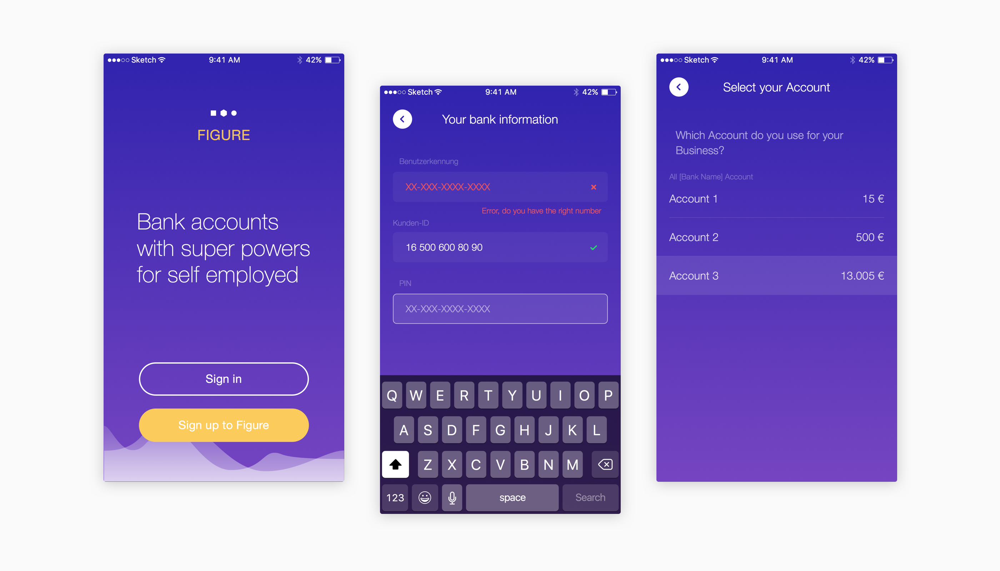
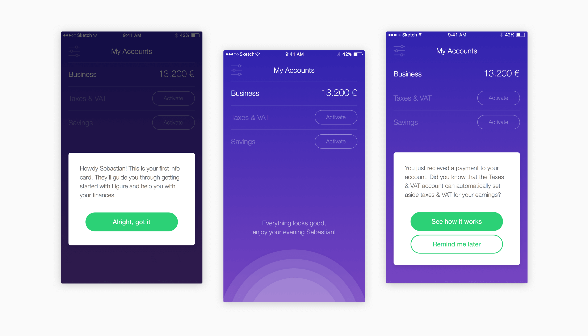
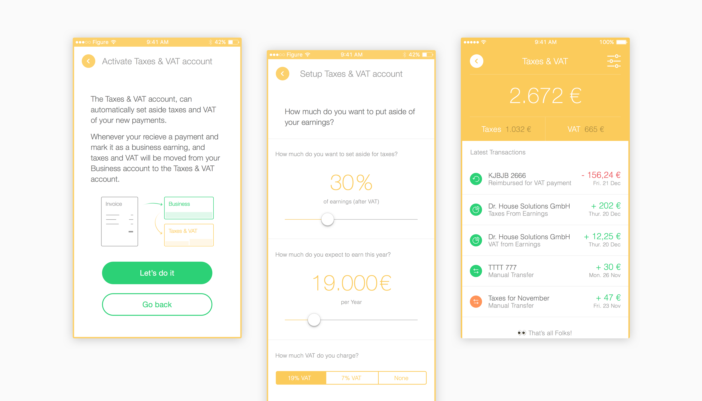
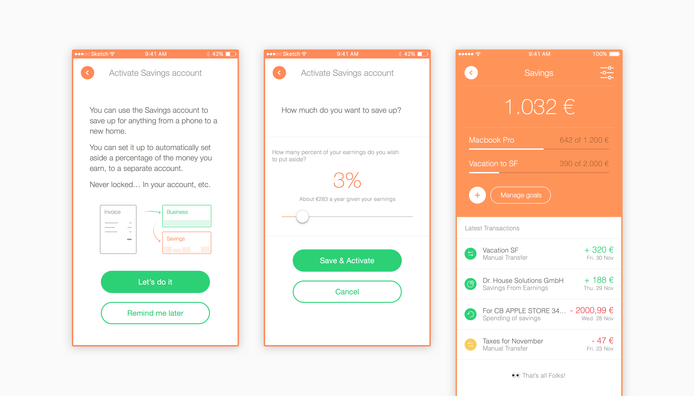
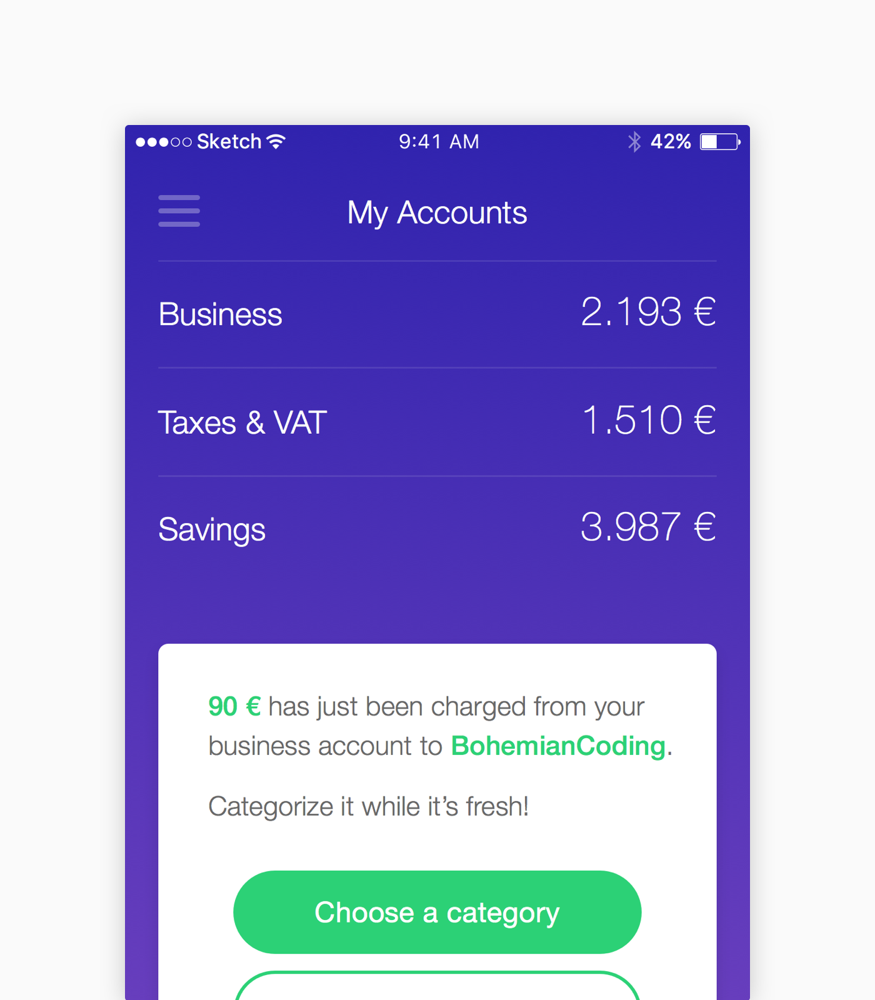
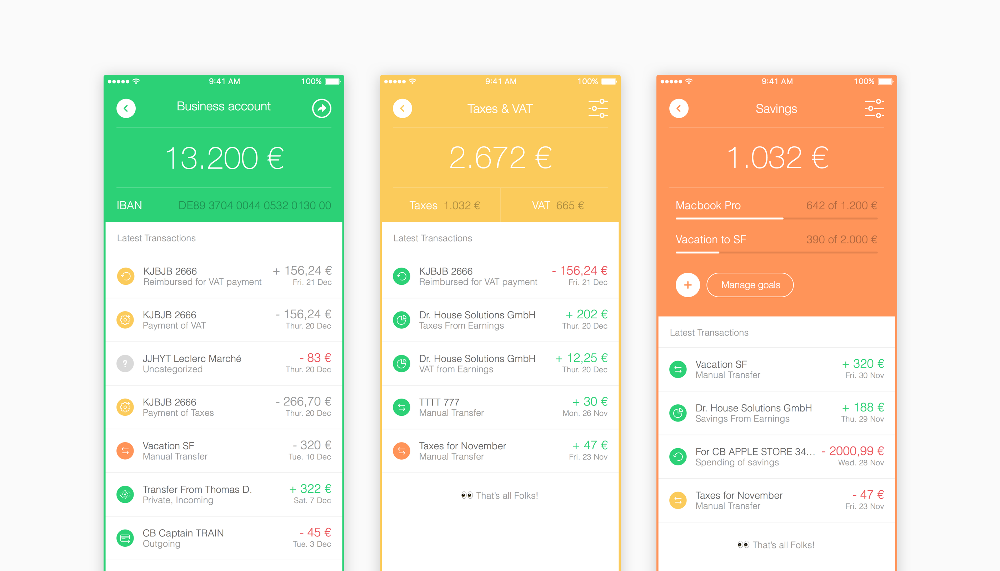
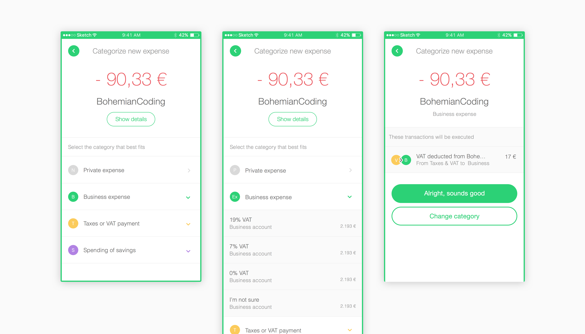

Figure prototype, a bank service for freelancer
It should be as easy to work for yourself as it is to be employed
That’s how we started to talk about the frustrations of freelancing life at Founders. Many of us had struggled with the same around the same challenges in our time as freelancers.
Figure App
As part of our exploration process, we went through rounds of interviews with freelancers, creating demos of prototypes around different features and ideas. Here are a few ideas we kept:
- We eliminate the complexity of creating a bank account by connecting to your existing business account (where you get paid)
- We help individuals stay financially afloat by putting aside taxes and VAT money from income
- Business expense tracking is vital, so let’s make it easy
- Life isn’t just working and paying your taxes, so we help individuals to set some money aside with simple savings

Connecting your business account to Figure
We separate business and personal bank accounts. Registered users connect the bank account that receives freelancer income to the Figure app.

Connecting your business account to Figure
A series of action cards help the user get onboarded, set up automated taxes and VAT payments or an extra savings account.

Setting up your Automated Taxes and VAT

Setting up an additional goal to set money aside for.

The dashboard is the principal view in the Figure app but each “account” (e.g. Business/Taxes/Savings) use the same layout and same transactions list.

Each transaction can be edited to generate automation, as shown below. By categorizing this expense as the appropriate VAT business expense, Figure will transfer a positive amount from your VAT account to your Business account.

A few months later
The Figure app/prototype generated enough interest with different stakeholder groups for us to pursue building the first prototype. We’ve since handed it over to a dedicated team that is now running the company under the name of Kontist.